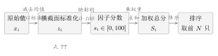

第十一章什么叫“这只股票不错”？—— 从感觉到因子
11.1我的备注栏里，写着三十七个“不错”
二零二六年九月十日，星期四，收盘之后。 那天市场很难看。收盘后系统落库的判势记录里，市场标签是退潮风险，建议仓位系数 0.101系统运行库market_sixdim_daily 的 2026-09-10 记录；核对时间 2026-09-24。2。
我关掉行情软件，打开自选股。备注栏是我自己加的小格子，平时随手写两个字，方便下次点进来时想起当初为什么把它放进来。
那天我往下翻了一遍，数了数：备注栏里写着“不错”的，有三十七个。
我挑出其中一只，试着把“为什么不错”讲清楚。讲得出完整理由的，不到五只。其余那些，我能说出口的句子长这样：
- “感觉它要动了。”
- “有人在进。”
- “跌不动了。”
11.2如果你说“不错”，我问你三个问题
那天晚上，我给自己出了三道题。每题都只问一件事，而且都必须用一个数来回答。 第一题：它比同行贵，还是便宜？ 不是问它的股价高不高，而是问它的价格相对它自己赚的钱、相对它自己的净资产，在同一个行业里排第几。我答不上来——因为我根本不知道同行现在的估值是多少。 第二题：它的利润在增长吗？ 我有“印象”，但印象来自三个月前看过的某篇公众号。我更该知道的是：最近一期已公告的报表里，营业收入同比是多少，净利润同比是多少，公告日是哪天。这三个数我一个都报不出来。 第三题：它最近是在走强，还是在走弱？ 这个我以为最不该答错。可我发现我连“最近”是指五个交易日还是二十个交易日都说不清，更别说跟大盘比、跟同板块比。 三题问完，我得到一个不太舒服的结论： 你答不上来，那你说出口的就不是观点，是情绪。 情绪不是坏东西。它是我按下买入键的最后那点推力。但它不能是那个按键的理由——理由必须能拿出来给别人看，也要能在三个月后拿出来给我自己看。
你四十岁，跟医生说“我身体挺好”。医生没跟你争，他开了一张单子：抽血、验尿、心电图、血压、肝功能、肾功能、血脂……二十项。
三天后你拿到报告，其中三项标了红。
你依然感觉“挺好”。可你已经不能再说“我身体挺好”了——你只能说“我有三项偏离了参考值，其中一项偏离得不轻”。
“挺好的”和“有三项偏高”，差别不在准不准，而在能不能被核对。医生不需要相信你的感觉，他只需要看那二十个数字，并且知道每个数字是谁在什么时候测的。
11.3不把它变成数字，会发生什么
我把“不量化”的代价数了一遍，一共四条。 无法检验。“要动了”这句话永远对。涨了叫“果然”，跌了叫“被大盘拖累”。一句标准可以随时改口径的话，等于没有信息。 无法复制。三个月后我想再做一次同样的判断，可我连当初依据的是哪几个数都找不回来。不能复制的东西，学不会，也改不动。 无法排序。这是最要命的一条。假设自选股里有十只都被我判断为“不错”，我要买几只？买哪几只？资金只有五万，最多买五只。没有一把共同的尺子，我就只能凭“谁最近更让我心动”来排——那又回到了情绪。 无法归咎。一笔亏损发生之后，我不知道该改哪一环。是选股选错了，还是买点错了，还是仓位给大了？如果没有把每个环节拆成可核对的小格，我的每一次“复盘”最后都会变成一句“下次注意”。 四条代价指向同一件事：我需要一个中间层，把“不错”翻译成一组能被别人重复算出来的数。那个中间层，就是因子。
一位老瓜农敲一敲就知道甜不甜。你问他凭什么，他说“手感”。
手感是好东西——他自己靠它赚了几十年。但他没法把手感教给学徒，也没法验证自己今天手感有没有失灵。
把“手感”拆开，它就变成几件别人也能测的事：敲击声的频率、瓜蒂的颜色、底部黄斑的面积。这三件事各自都不等于“甜”，但把它们合起来，就能得到一把学徒也能用、也能被检验的尺子。
因子就是被拆开、被称过重量的手感。
11.4因子，是一种可以被检验的偏见
先说一个“差不多对”的说法：因子就是给每只股票打一个分，分高的排前面。 这句话抓住了七成。它漏掉的二成，恰恰是工程上最容易翻车的地方——这个“分”是从哪里来的。所以下面把它写严谨一点。定义 11.1（因子）
给定一个交易日 \(t\) 和一个股票集合 \(\mathcal{U}\)，一个因子 \(f\) 是把每只股票映射成一个实数的函数
\[f:\mathcal{U}\to\R,\qquad u\mapsto f(u).\]
\(f(u)\) 叫股票 \(u\) 在该因子上的原始值。同一交易日 \(t\) 上所有股票的原始值，构成一个横截面。
stock.ohlc 与 stock.financial_report；选股入口先校验行情库是否挂载，未挂载时直接抛错“行情数据库(stock.duckdb)未挂载”，不返回假数据。
二是能对齐。只有在同一个时间点上取到的值，才能放在一起比较。
这里最常见的病叫前视偏差：拿二零二六年四月才公告的年报，去给二零二五年十二月的股票打分，等于翻到答案再考试。系统的做法是财务数据一律按公告日 ann_date 取数，选股时只取“截至当天已经披露”的那一期。
三是能排序。原始值必须能比大小，而且比的方向要写清楚。
“波动率”这个因子，数值越大越差；“账面市值比”这个因子，数值越大越好。同一个“越大”，含义相反。方向写反一次，整张榜就倒过来了。
“可计算”的三个条件
能取到（有可复现的来源）\(\Rightarrow\) 能对齐（同一时间截面）\(\Rightarrow\) 能排序（方向明确）。
三条缺一条，得到的都不是因子，是说法。
三条缺一条，得到的都不是因子，是说法。
\[z_i \;=\; \frac{x_i-\mu}{\sigma},\qquad
\mu=\frac{1}{n}\sum_{j=1}^{n}x_j,\qquad
\sigma=\sqrt{\frac{1}{n}\sum_{j=1}^{n}(x_j-\mu)^2}, \tag{11.1}\]
这里 \(x_1,\dots,x_n\) 是横截面上 \(n\) 只股票的因子原始值。
这个符号在讲什么：\(\mu\) 是这一群股票的平均水平，\(\sigma\) 是它们的分散程度。\(z_i\) 回答的是“这只股票比平均高了几个身位”。贵不贵、强不强，都被换算成了同一个单位——身位。
这个换算有三个我一开始没想到的后果，它们全都属于“误差从哪来”：
其一，\(z\) 只在当天这一群股票里有意义。今天算出的 \(z=1.5\)，是在今天的股票池里比平均高 1.5 个身位；换一个股票池，这个数就变了。它不是这只股票的固有属性。
其二，\(\sigma\) 太小时会爆掉。如果横截面上所有股票的值几乎一样，\(\sigma\) 接近零，除法会把噪声放大成天文数字。系统在 internal/screener/factor_engine.go 里的处理是：当 \(\sigma<10^{-10}\) 时强制令 \(\sigma=1\)。等于承认“这一群股票在这个因子上没有可分辨的差异”，于是谁都拿不到加分。
其三，反向因子必须翻号。\(z_i\) 越大分越高，这对“越小越好”的因子是反的。低估的股票会被排到最后一名去。
到这一步，我终于可以把“不错”翻译成一句可以被核对的话了：
“这只股票不错”的可检验版本
在二零二六年九月十日的全市场截面上，这只股票的价值因子分 78、质量因子分 65、动量因子分 41、低波动因子分 52、盈利稳定因子分 60、流动性因子分 88，按均衡模板加权后总分落在候选池前 \(5\%\)。
11.5它在系统里长什么样
上面讲的都是“应该怎样”。系统里对应的是两个文件。 第一件事，是把原始值变成分数。internal/screener/factor_engine.go 里有两把尺子，一把给正向因子，一把给反向因子：
internal/screener/factor_engine.go）// 正向因子：值越大分越高
func zScoreTo0100(value, mean, stdDev float64) float64 {
z := (value - mean) / stdDev
sigmoid := 1.0 / (1.0 + math.Exp(-z))
return sigmoid * 100
}
// 反向因子（值越低越好）
func inverseZScoreTo0100(value, mean, stdDev float64) float64 {
z := (mean - value) / stdDev
sigmoid := 1.0 / (1.0 + math.Exp(-z))
return sigmoid * 100
}internal/screener/pro_factor_engine.go 的主流程是这样一行一行加起来的：
internal/screener/pro_factor_engine.go）var totalScore float64
for factorID, weight := range weights {
if fs, ok := factorScores[factorID]; ok {
totalScore += fs.Score * weight
}
}
totalScore = roundScore(totalScore)if ok——只有这只股票在这个因子上有有效分数时才加。这个不起眼的判断，后面第 12 章会指出它是“不同股票之间可比性被打破”的入口。
第三件事，是规定因子的展示顺序。因子在界面上、在公式字符串里、在日志里，都必须按同一套顺序出现——否则同一份策略，两个人看到的公式会不一样：
internal/screener/factor_engine.go）factorOrder := []FactorID{
FactorValue, // value 价值
FactorQuality, // quality 质量
FactorMomentum, // momentum 动量
FactorLowVolatility, // low_volatility 低波动
FactorEarningsStability, // earnings_stability 盈利稳定
FactorLiquidity, // liquidity 流动性
FactorOrderBook, // order_book 盘口
FactorCointegration, // cointegration 配对/协整
}| 常量 | 序列化名 | 中文 | 方向（分数越高代表什么） |
FactorValue | value | 价值 | 正向：相对更便宜 |
FactorQuality | quality | 质量 | 正向：更能赚钱、负债更轻 |
FactorMomentum | momentum | 动量 | 正向：近期走势更强 |
FactorLowVolatility | low_volatility | 低波动 | 反向：波动越小越好（走反向尺子） |
FactorEarningsStability | earnings_stability | 盈利稳定 | 正向：越稳越好 |
FactorLiquidity | liquidity | 流动性 | 正向：越容易买卖越好 |
FactorOrderBook | order_book | 盘口 | 正向：买盘越主动越好 |
FactorCointegration | cointegration | 配对协整 | 反向：相对市场越超卖越有吸引力（走反向尺子） |
序列化名即 FactorQuality 表中的 factor_name 键；固定展示顺序由 buildFormulaString 保证。
系统源码 internal/screener/factor_engine.go、internal/screener/pro_factor_engine.go；核对时间 2026-09-24。

我最早的一个误解是：既然因子能排名次，那选出来的第一名应该就是明天涨得最多的那只。
不是。因子是一个排序工具，它只回答一个问题：在这群股票里，谁更靠前。
“靠前”是一个相对的、统计意义上的说法。它意味着，把历史上所有这样的横截面都拿出来，靠前那一组的平均表现好于靠后那一组。它完全不承诺今天这一只、明天这一周会怎样。
理解了这一点，就能接受两件让新手很难受的事：第一，因子选出的票照样会跌，而且经常跌得毫不含糊；第二，判断一个因子好不好，不能用“它上次选的那只涨没涨”，而要用第 14 章要讲的 IC 那类统计量——那是拿几百个横截面一起算出来的东西。
把相对结论当绝对承诺，是量化里最常见的一种自伤。
“那我多加几个因子，是不是就更准了？”——我干过这件事，结果更差了。
原因在于总分是加权求和（清单 代码 11.2）。每加一个因子，就等于在总分里掺进一股新的成分：
- 如果这个因子携带的信息和已有的因子高度重复，它带来的不是新信息，而是权重的偏移——某一类特征被重复计了两次，总分开始偏向那一边；
- 如果这个因子和自己的排名毫不相关，它带来的主要是噪声，会把真正有区分度的那几个因子的信号稀释掉。
11.6本章的真实出处
- 原始值统计量与 \(\sigma\) 退化保护（\(\sigma<10^{-10}\Rightarrow\sigma=1\)）：
internal/screener/factor_engine.go的computeStats - 正向 / 反向两把尺子：
internal/screener/factor_engine.go的zScoreTo0100、inverseZScoreTo0100 - 固定因子顺序与公式字符串：
internal/screener/factor_engine.go的buildFormulaString - 加权总分主流程：
internal/screener/pro_factor_engine.go的computeWeightedProScores - 原始值收集（含财务按公告日取数）：
internal/screener/pro_factor_engine.go的collectProFactorValues - 选股入口与行情库校验：
internal/screener/screener_service.go的ScreenStock - 前端选股页与公式展示：
ui/src/pages/下的选股页面，路由表在ui/src/App.tsx
动手试一试（十分钟）
- 打开系统，进入选股页，选上任意一个策略模板，让它在全市场跑一次。
- 在结果列表里挑一只票，展开它的因子明细，看八个因子的分数。
- 把界面上显示的公式抄下来。对照表 表 11.1 的顺序，确认它确实按
value到order_book的顺序在展示。 - 现在自己回答三个问题：这只票为什么排在前面？它在哪一项上赢了？如果它的流动性因子分只有 20 分，它还会出现在这张表里吗？（答案在第 12 章。）
- 最后做一个思想实验：把这只票的原始值 \(x\) 换成全市场最高的一只票的原始值，它的分数会变成多高？再想一想：如果全市场的 \(\sigma\) 忽然变得很小，会发生什么？（回到本节讲 \(\sigma\) 退化保护那一段。）